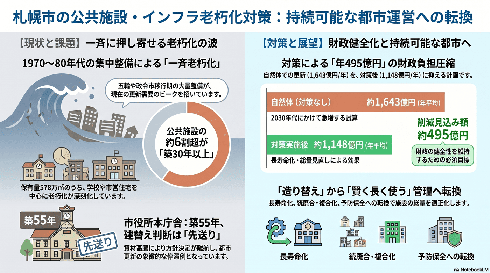

公共施設・インフラの更新需要の本格化
高度成長期以降に整備した施設が一斉に更新時期を迎える。

背景
施設を建てた時期が集中しているため更新も集中する。札幌市は冬季五輪（1972年）と政令市移行に合わせて1970〜80年代に施設を大量整備したため、いま一斉に更新期を迎えている。人口減で利用者が減る中、すべてを同じ規模で建て替えれば財政が持たず、総量と配置の見直しが避けられない。都心では更新が札幌駅・大通に集中する一方、建築費の高騰や北海道新幹線の札幌延伸の遅れも事業の重しとなっている。
主要データ
| 有形固定資産減価償却率（老朽化の度合い） | 政令市平均より高め＝施設を長く使い続け、建築物の更新が追いついていない |
|---|---|
| 公共施設の保有量 | 約578万㎡（2022年度末。学校が4割強、次いで市営住宅） |
| 築30年以上の割合 | 公共施設の約6割超（1970〜80年代の集中整備が主因） |
| 更新等の事業費（試算） | 対策なしの自然体で年平均約1,643億円→長寿命化・総量見直し後 約1,148億円（年平均約495億円の縮減見込み） |
| 市役所本庁舎 | 1971年完成・築55年。2025年に専門委員会は建替えが最適と整理も資材高騰で結論先送り（建替えなら大通西1丁目の旧NHK跡地が候補・着工は早くて7年後以降） |
事実
- 都市基盤の老朽化が進み、公共施設等の更新需要が本格化すると札幌市は見込んでいる。
- 資産の古さを示す有形固定資産減価償却率は政令市平均より高めで、施設を長期間使い続けている（更新が追いついていない）ことを示す。
- 公共施設（企業会計を除く）の保有量は約578万㎡（2022年度末）で、学校が4割強を占め、全体の約6割超が建築後30年以上経過している。
- 対策をしない『自然体』では更新等の建設事業費が2030年代にかけて急増し年平均約1,643億円に達するが、長寿命化・総量見直し等で年平均約1,148億円（約495億円/年の縮減）に抑える試算（管理基本方針の取組期間は2019〜2028年度）。
- 札幌市役所本庁舎は1971年完成で築55年と老朽化が進み、2025年の専門委員会では建替えが最適と整理されたが、建築資材の高騰を理由に方針決定が先送りされ、建替え・改修の両案を継続検討している（建替えの場合は大通西1丁目の旧NHK跡地が候補、着工は早くて7年後以降）。
- 都心では札幌駅・大通に建替えや再開発が集中する一方、建築費の高騰や北海道新幹線の札幌延伸の遅れが事業の重しとなっており、民間ビルの一斉更新は『都心建物の一斉老朽化と建替えピーク』とも連動する。
- 投資的経費（普通建設事業費）は令和5年度決算で約1,354億円（前年度比+19.6%）と増えているが、その多くは駒岡清掃工場の更新や学校の改築・リニューアルなど老朽施設の『更新』が中心。資産や雇用を新たに生む『新規投資』と、守りの『更新投資』を分けた内訳は公表されておらず、投資の“質”の見える化が課題となっている（→トップの「札幌市のお財布事情」で図解）。
解釈
更新の集中と人口減が重なるため、すべてを同規模で建て替える前提は成り立たない。総量と配置の見直しが避けられない。さらに、新千歳空港〜札幌駅〜大通という都心軸に投資と更新が集中するなか、建築費高騰と新幹線延伸の遅れがコストと時期の不確実性を高めており、優先順位づけがいっそう重要になる。
提案
- 長寿命化と統廃合・複合化による総量適正化（地域の反発と向き合う必要）。
- 更新時期の平準化と予防保全への転換。
深掘り — 市民の声と答え
資産の老朽化って、具体的にどれくらい進んでいるの？
公共施設（企業会計を除く）の保有量は約578万㎡で、その約6割超が築30年以上。資産の古さを示す有形固定資産減価償却率も政令市平均より高めで、施設を長く使い続けている＝更新が追いついていないことを意味する。1972年の冬季五輪や政令市移行期（1970〜80年代）に集中整備した施設が、いま一斉に更新期を迎えている。
全部建て替えると、いくらかかるの？
何も手を打たない『自然体』だと更新等の建設事業費は2030年代にかけて急増し、年平均で約1,643億円規模になる試算。長寿命化やムダの削減、施設総量の見直しで年平均約1,148億円（約495億円/年の圧縮）に抑える計画だが、人口減で利用が減るなか『同じ規模では建て替えない』判断が避けられない。
市役所など大きな建物の建替え計画はあるの？ 建築費高騰の影響は？
市役所本庁舎（1971年完成・築55年）は2025年の専門委員会で建替えが最適と整理されたが、建築資材の高騰で方針決定が先送りされ、建替え・改修を継続検討中（建替えなら大通西1丁目の旧NHK跡地が候補、着工は早くて7年後以降）。同じ建築費高騰は、都心の民間ビル建替えや、札幌駅・大通に集中する再開発の遅れにもつながっている。
検討体制・メンバー
札幌市財政局（公共施設マネジメント）と各施設所管が連携する。検討会には建築・土木の技術者、資産管理の専門家、地域住民（統廃合の影響を受ける側）、財政部局を入れ、総量縮減を地域と合意しながら進める必要がある。
AIノート
AIの貢献度は中〜大。劣化データに基づく更新時期の予測と平準化、施設の利用実態分析による統廃合・複合化の検討、予防保全の最適化で費用を抑えられる。再配置の合意形成は人の議論が中心となる。